Motorized Prosthetic Elbow
Overview
For my final project as part of Northwestern's Master's in Robotics, I designed a motorized prosthetic elbow system that can aid upper limb amputees maintain balance while walking.
The motivation behind this project stems from research indicating that upper limb amputees may have higher risk of falling due to the imbalance in upper body mass [1]. The system attempts
to prevent such falls by analyzing the user's walking speed and adjusting the arm swing motion accordingly.
This project is building off of previous works that have completed some parts of the puzzle, which includes the electrical/mechanical design of the elbow and the modeling of the arm swing motions. The main
goal of my project was to integrate all the current pieces into one working system capable of real time detection and adjustment. To do this I decided to use the Zephyr real time operating system with a Teensy 4.1
microcontroller, a PI torque control system, and step detection algorithm.
Control System
The goal of the system is to output the required torque for a particular arm swing motion based on the person's walking speed. To accomplish this, I used torque profiles created by
by Yael Shalom, a previous student who worked on this project. Yael created an arm motion model for the swing of an elbow that calculated the required output torques for the system
(here is a link to her work for more info). These output torques
were generated for different walking speeds and are used as the main input for the control loop.
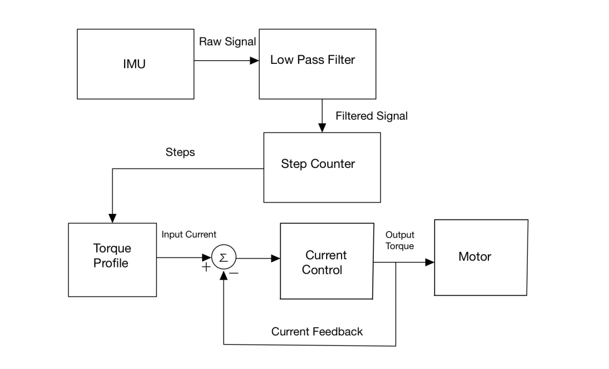
The idea behind the control system is that the user's steps will determine their walking speed and thus determine their torque profile. This torque profile will then be converted to
a current and fed into the current control loop. The current control loop will calculate an output torque using a PI controller and send that to the motor. The IMU data is continually being collected, but the number
of steps is only calculated for a specified window (every 5 seconds). If the number of steps changes due to a change in walking speed, the appropriate profile would be selected.
Implementing the Torque Profiles
The motor used in the system has a high gear ratio which allows it to fit within the compact elbow space while outputting enough torque. The motor's gearbox however is not back driveable which does not allow the arm to swing back down. To fix this issue, I decided to add more torques both to the upward and downward swings of the profiles using the following formula: $$ {T_{addition} = max(abs(T_{profile}))*scale} $$ This formula scales the torques based on the max torques of that profile. This additional torque would then be added to the output torques of the current control loop, making any torque in the positive direction more positive and any in the negative direction more negative.To implement this solution, I had to find the direction of the arm swing based off of the input torque profiles. To do this, I created acceleration profiles using position profiles that Yael used in her torque calculations. The acceleration profiles made it much easier to determine the direction of the arm swing, and they also served as a better performance metric for the system. Below you can see plots of reference and output torques, and reference and output accelerations. It is much easier to judge the performance of the arm motion when looking at the output accelerations, and so that is the metric I used for comparing test results. 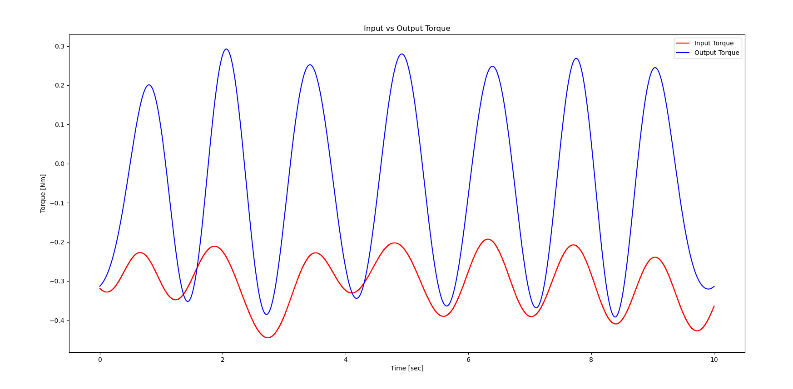 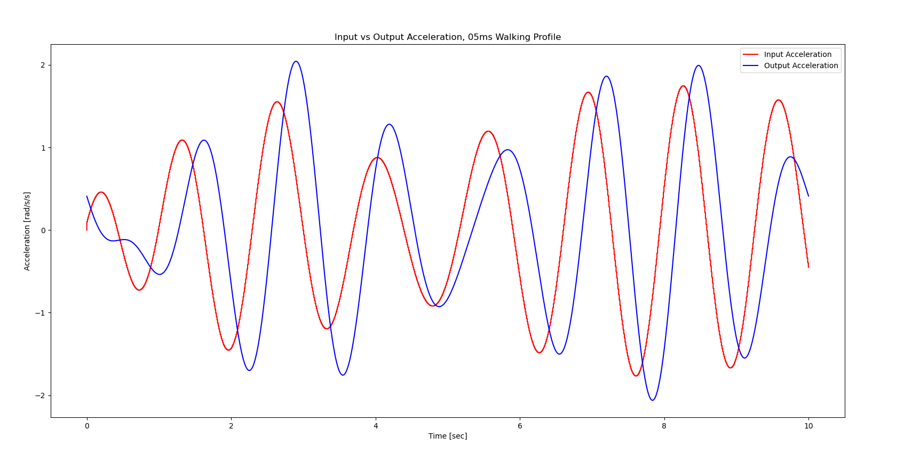
Software Development
All of the software for the project was developed using the Zephyr real time operating system (RTOS). Zephyr allows for simple communication with hardware with its mulitple APIs and device tree hardware abstraction system. It also allows users to easily set up mulithreading applications that need multiple streams of information to run in real time, which is the main reason why I chose to use it. It also already had support and examples for almost all the hardware I was using, such as a libary for the MPU6050 IMU, INA219 current sensor, and Teensy 4.x support (although very scarce). As such the first step was setting up the Teensy 4.1 to run with Zephyr.
Embedded Software Development with Zephyr
Zephyr has very scarce support for the Teensy 4.1. Their own flashing system does not currently support Teensy 4.1 as of the time when this post is being uploaded, and there was no documentation on how to use certain basic pins such as ADC and PWM. After digging through a lot of documentation and sources for the processor that the Teensy 4.1 uses I was able to gain almost full control of Teensy 4.1 using Zephyr's device tree configuration system. This includes PWM, ADC, SD read/write, GPIO, I2C, and SPI. Currently all of the working configurations, parameters, and registers can be found in this project's Github repository. I will make another post laying out the device tree overlay, the necessary configs, and most importantly the documentation that helped me figure out the proper syntax and values for these pins to work with the chip in a more organized manner.Control System Implementation
To implement the control system, I created C libraries for Zephyr's sensor APIs and other utility functions. I then used Zephyr's threading API to create threads for all the streams of information that I needed. This included separate threads for the sensors, the motor encoder, the motor control signals, and the current control loop. I created a thread for the torque profiles as well because I decided to save them as arrays that essentially get published when selected. After creating the threads I synchronized them as follows: the current control, motor control, IMU sensor, and encoder readings are all running at 1 KHz, the torque profiles run at 100 Hz, and the current sensor runs at 200 Hz.I tried to follow the structure of the control systems diagram as closely as possible when creating threads and sending information between them. For instance, I could implement my step detection algorithm either in the IMU sensor thread or in the torque profile thread. However, the torque profiles should just recieve the step count and proceed rather than deal with the functional overhead of grabbing the data and processing it. This seemed to help in synchronizing the threads better since only one step value was being sent out.
Step Detection and Torque Selection Algorithm
The mapping between step detection and the torque profile involved a lookup table style system. The step detection algorithm takes in the filtred IMU signals and counts the number of peaks detected. It does so by filtering out values based on the magnitude of the highest peaks and by how frequent a peak is detected. This allows for the algorithm to not count smaller local maxima and to avoid noise at higher peaks if it already counted a peak close by. I tested the algorithm by walking on a treadmill at two different speeds and plotting the filtered signal. 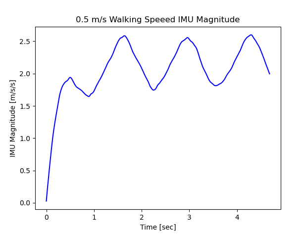 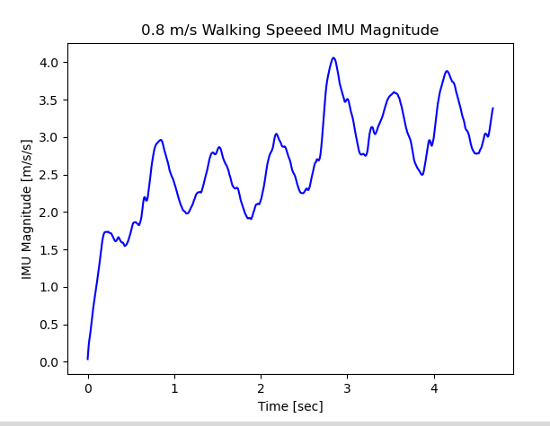For the 0.5 m/s speed, the step count was 3, and for the 0.8 m/s, the step count was 9. I did many trials like this to determine the average steps that correspond to each walking speed. I determined that for my gait, 0.5 m/s corresponds to 4 steps and 0.8 m/s corresponds to 10 steps within the 5 second sampling window. If no steps are detected, no profile is selected and the arm stops swinging. When selecting the torque profile, I give a +/- 1 range on the recieved steps to get a better reading on steps over time.
Mechanical Design
The elbow design is based off of Fillauer's E-400 prosthetic elbow . A previous group designed the elbow and motor housings, but
I had to modify the motor housings slightly since I changed the motor to one that was slightly larger with a higher rated torque (3.4 Nm as compared to 1.65 Nm). The final elbow design remained
nearly the same since it is following the Fillaeur design which is meant to fit into a custom sized forearm prosthetic. I also made a PCB and a housing for it
that can be strapped to someones elbow. A photo of the final system is seen below.
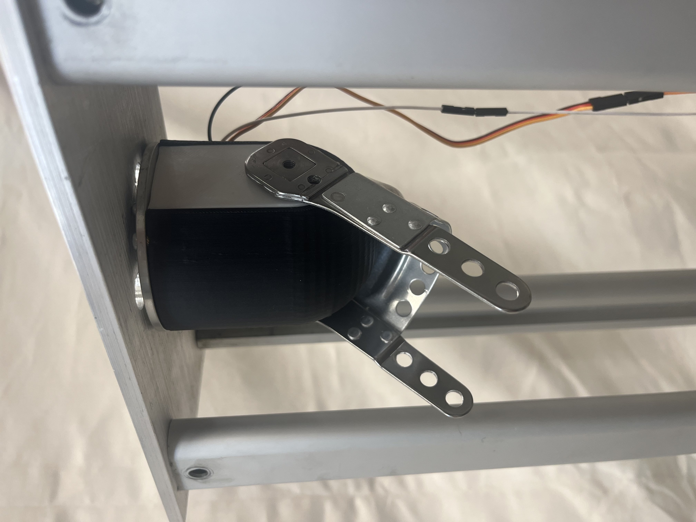
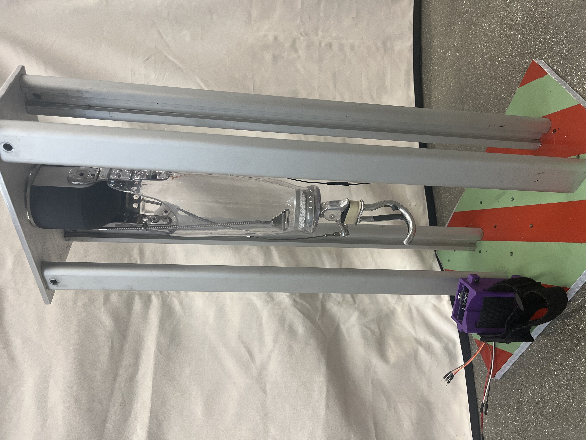
The motor selection is arguably the most important decision in this mechanism. To select a motor with the necessary torque, I used a motor selection script that Yael developed when she was selecting
a motor for her arm motion model. Her script looked at the torque/speed curves of the motors compared to
the calculated torques for arm swings of different walking speeds. If the torque speed curves are above the calculated torques, it is a viable motor.
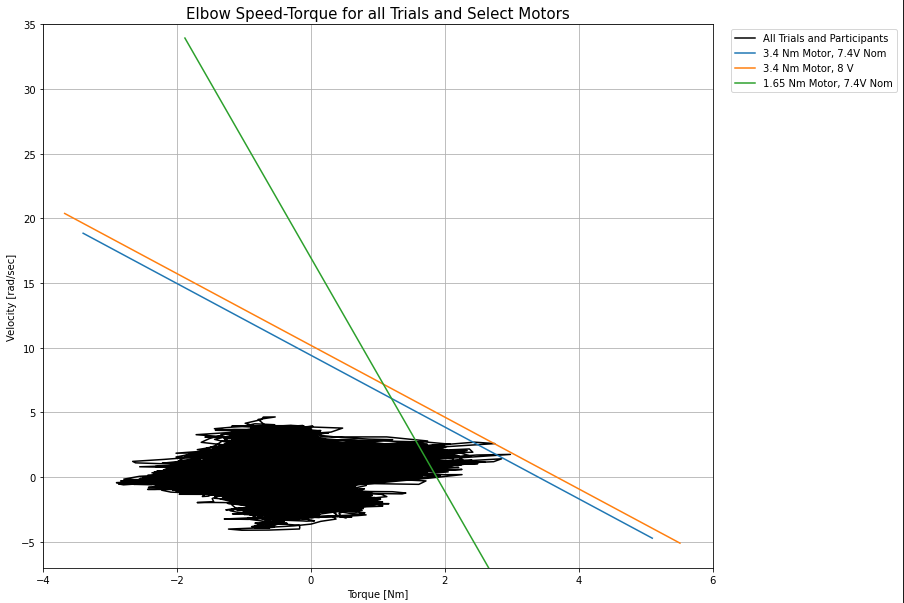
The results of the motor selection script show that the previous motor being used was not able to clear a good amount of calculated torques. The new motor being used clears almost the
entire range of calculated torques with its nominal voltage and does clear all of them when used at max 8.0 volts.
Electrical Design
The same group who designed the elbow also designed much of the foundation for the circuitry. The final circuit diagram can be seen below. The main components include an IMU for
acceleration measurements, a current sensor for the torque control loop, and a motor driver.
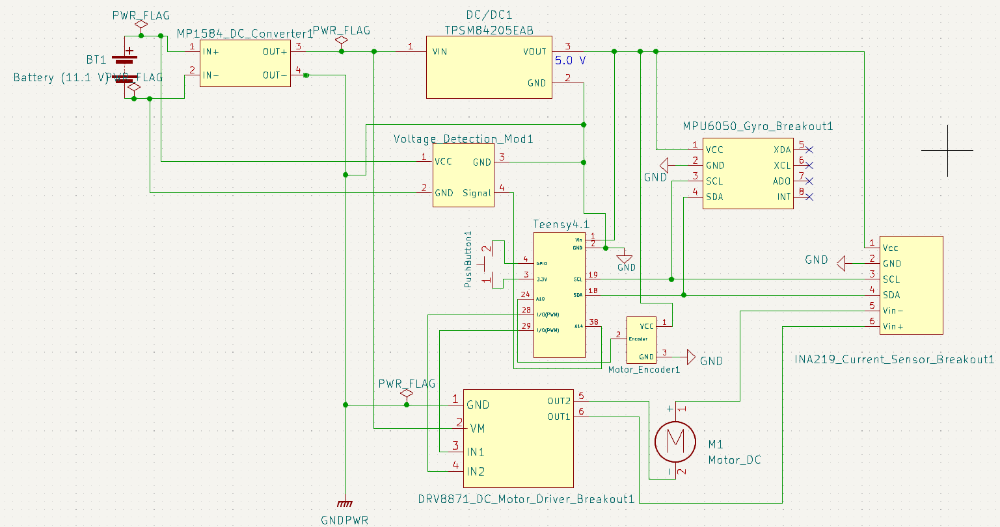
The only (and major) change to the circuit was switching out their Adafruit Pro-Trinket with a Teensy 4.1 to gain more processing speed and storage. With this came the addition of two
voltage regulators, one to ensure 8V (max operating voltage of the motor) to the motor driver and another to bring the voltage down to 5V for the Teensy and all the other chips. I designed a PCB
for the circuit to try to keep it as compact as possible. The final circuit is powered by an 11.1V 3S LiPo.
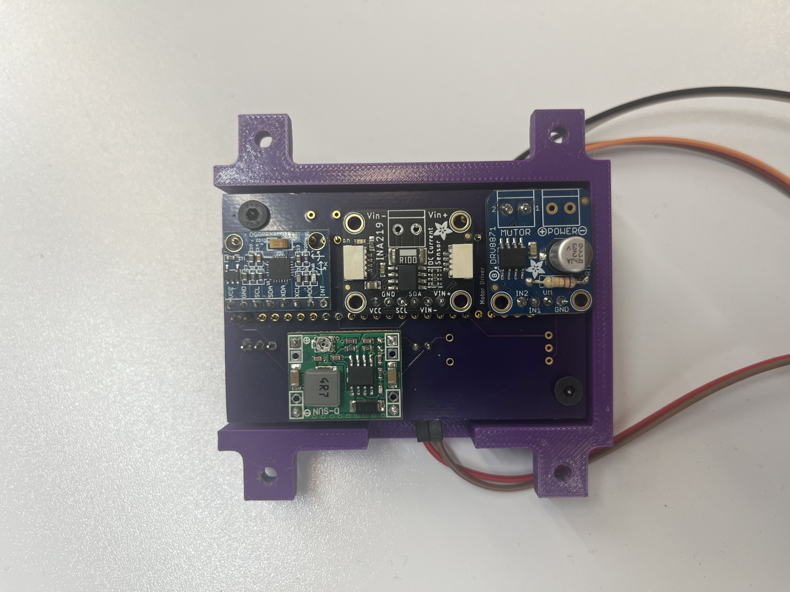
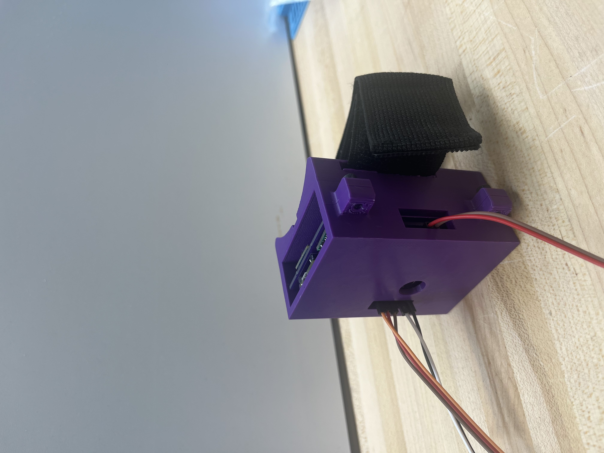
Results
To test the fully integrated system, I walked on the treadmill at two different speeds of 0.5 m/s and 0.8 m/s to test the responsiveness to each individual speed.
Here is a video of the arm swinging with me as I walk at a speed of 0.5 m/s. I start off with no motion to show that the arm is stationary and then it begins
to swing once I am walking.
Here is a plot showing the resulting acceleration of the arm compared to the reference acceleration.
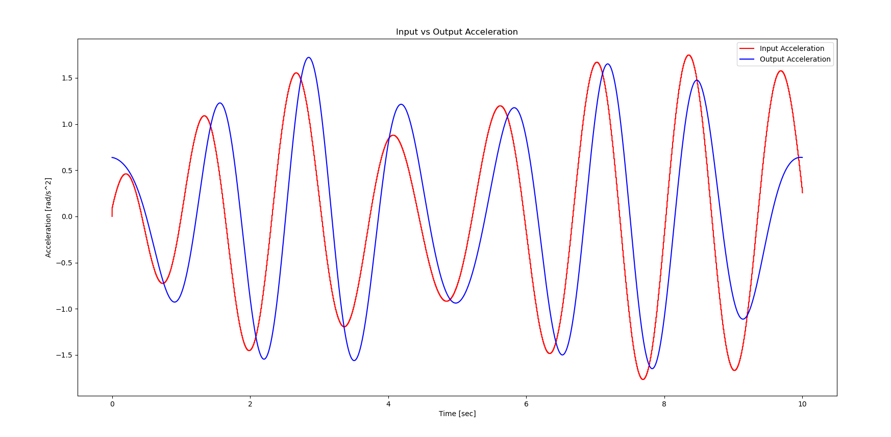
From this data it seems that the arm was able to follow the reference accelerations closely. The arm swings seem to be out of phase which is
something I notice gets worse as the profile keeps going. This might be due to a synchronization issue with the motor control loop that is not
letting it switch direction commands fast enough. Despite this, the arm seems to follow the correct trajectory, and seems to swing on most of the
right steps throughout the video.
I then tested the 0.8 m/s walk.
And the resulting acceleration plots.
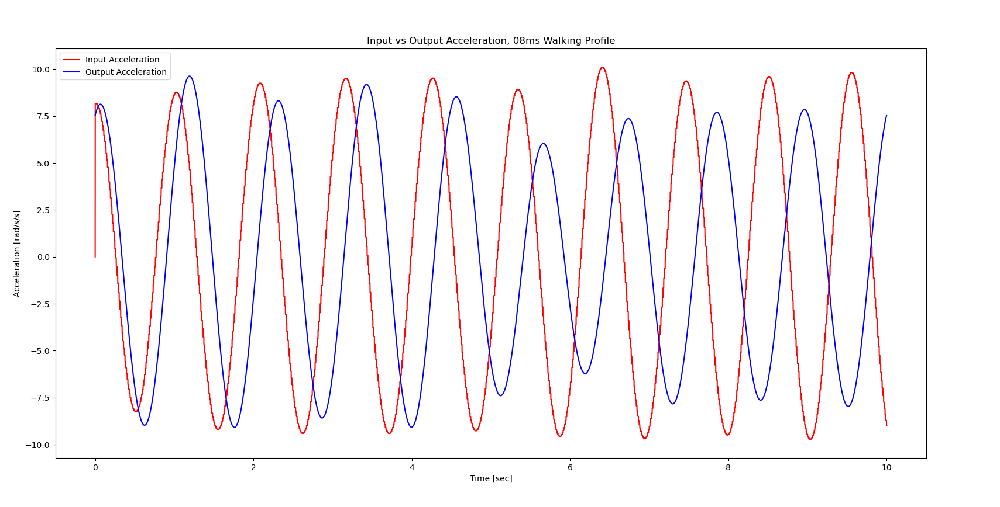
The lagging issue with the 0.8 m/s profile is much more pronounced than the 0.5 m/s profile. The output acceleration magnitudes also seem
to decrease at 5 seconds despite matching closely for the seconds before. The arm however seems to swing as intended in the video, so it may be possible
that the data collection itself introduces some lag.
As a last test, I wanted to test the responsiveness of the system when switching between speeds.
The goal was to start at one speed and change to the next one. The video below shows the arm swinging with me as I walk from 0.5
m/s to 0.8 m/s.
The responsiveness of the system decreased quite a bit when trying to detect different steps and selecting different profiles. From the video it can be seen
that the system does eventually respond to the change in walking speed and outputs the right profile, but it does take it a couple of seconds to do so. I think the main
cause for this is my step detection algorithm. The algorithm is being used with the low pass filter in place of using an FFT to check the frequency of the
signals mainly because an FFT was taking too long to run in real time. Making the algorithm more efficient at detecting peaks or getting a smoother signal might help
detect the steps better without the need for an FFT.
Future Work
There are a couple of improvements that can be made for this project to become a more responsive integrated system.
1. Picking a motor with a much smaller gear ratio would allow for the torque profiles to be used more directly. This could lead to better results since there will be no need for scaling the torques.
2. The walking speed/step detection algorithm was developed due to how slow the FFT calculations were running in real time. Further research into a better FFT library, or how to use
any FFT library more efficiently would greatly benefit the step counting portion of the system. If not, a better filter for the IMU signals alone would help the current algorithm.
3. As of now the torque profiles are stored in arrays and then sent out in a for loop when the torque profile thread detects a corresponding step count. Moving away From
the lookup table style might also give the system better responsiveness when switching between speeds in real time.